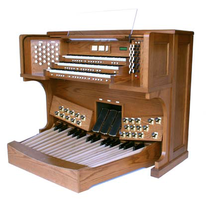

D.L. Simmons & Company Church Organs
Phoenix Organ Model PD 346 Three-Manual Organ
- 184 stops - 46 stops on each of four specifications
- All pipe samples can be identified as to the organ and church from which they were recorded
- High resolution orchestral stops on Specification 4
- Specifications - American Romantic, German Baroque, French and Orchestral/Organ
- General Toe and General Thumb Pistons, Divisional Thumb Pistons and Pedal Toe Pistons
- Klann Organ Supply Thumb Pistons and Toe Pistons from Syndyne.
- Choice of Brass or Chrome toe pistons and Expression Pedals as standard
- 16 Independent Combination Memory Levels for ea. specification, totaling 64 (up to 99 optional)
- Swell, Choir and Solo Expression Pedals and Programmable Crescendo Pedal
- Expression and Crescendo Pedal Indicators (Bar Graphs)
- MIDI couplers for each Division in the event Hauptwerk is added in future
- Harris Drawknobs and Peterson D-Style Coupler Tabs (used by many pipe organ builders)
- Organ can be easily interfaced with pipes at any time
- Console will be custom stained to match church furnishings
- Only top quality hardwoods and veneers used in console
- AGO pedal board has Select Canadian Maple caps w/ Ash as with pipe organ pedal boards
- 4 Keyboards are tracker touch
- Lighted Acrylic Music Desk (Lighted, Lattice Desk optional) and LED light for pedal board
- Console Clock is standard
- Note-by-note and stop-by-stop voicing using 11 different voicing parameters
- LCD operated by three thumb pistons - FN, Plus and minus
- Transposer +6, -6 (12 Key)
- Auto Pedal
- Reverb Level and Length Adjustments
- Fine Tuning Control
- Master Volume Control
- 4 Temperaments - Equal, Werkmeister, Silberman and Velotti
- Solid Oak locking roll top
- Minimum of 9 Main audio channels
- Reverberation System is Lexicon MX300 Processor
- Furman Power Sequencer with built-in surge protection and line conditioning
- Many additional options and customizations avaiable


WEBSITE CONTENTS COPYRIGHT© 2015
DL SIMMONS & COMPANY CHURCH ORGANS
DL SIMMONS & COMPANY CHURCH ORGANS